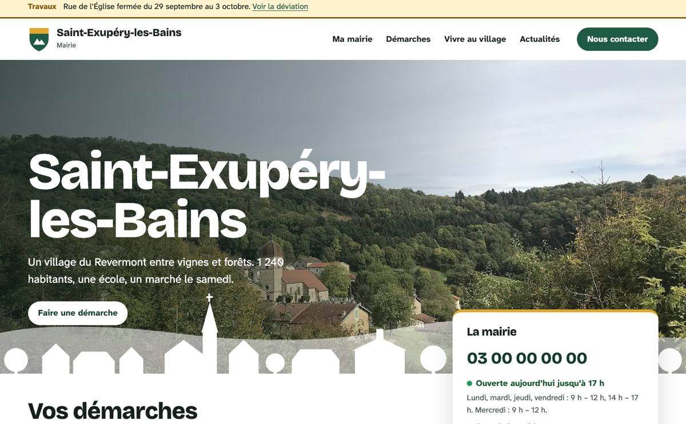

Village
Pour une commune rurale. Grande photo du village, frise du territoire dessinée à partir de ses bâtiments, démarches les plus demandées en un geste.
Un site de mairie prêt à l’emploi pour les communes de moins de 5 000 habitants, beau dès la mise en ligne et simple à tenir à jour.
Une seule installation sert plusieurs communes, chacune avec ses contenus, ses comptes et son adresse. Elle est prévue pour être hébergée par une intercommunalité, un syndicat mixte ou un prestataire mutualisé, pour le compte des communes.
Chaque commune choisit les siennes, sans palette imposée : c’est son identité. Le système calcule les teintes dérivées et garantit que le texte reste lisible.
Pages statiques, communes et contenus fictifs, téléphones et adresses factices. Les mentions de pied de page, dont l’accessibilité, sont des exemples : aucun audit n’a été fait sur ces pages.
Le socle (gestion des communes, des comptes, des contenus, mesure d’audience respectueuse de la CNIL) est en développement. Les gabarits sont la prochaine étape. Rien n’est encore en ligne.
La vraie difficulté d’un site de mairie, c’est de le tenir à jour. Une piste : un élu ou une secrétaire de mairie envoie une note vocale ou une photo depuis son téléphone, l’IA prépare la page, une personne relit et publie. Est-ce acceptable pour une collectivité, ou faut-il d’abord un outil qui fonctionne entièrement sans IA ? Votre avis m’intéresse.